19 simulated RGB images | Mission FULL_FARM_SURVEY
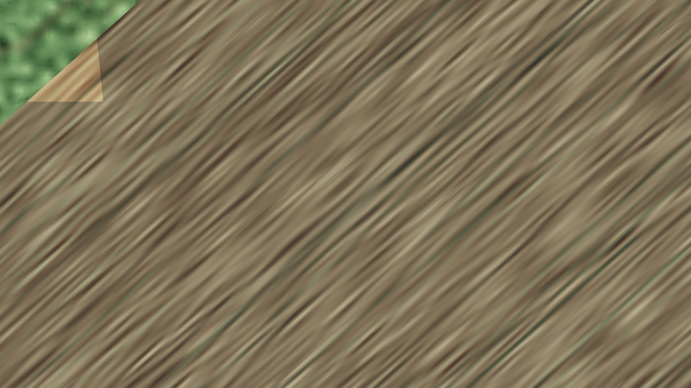
survey_camera | XYZ -44.208, -47.028, 0.6 m
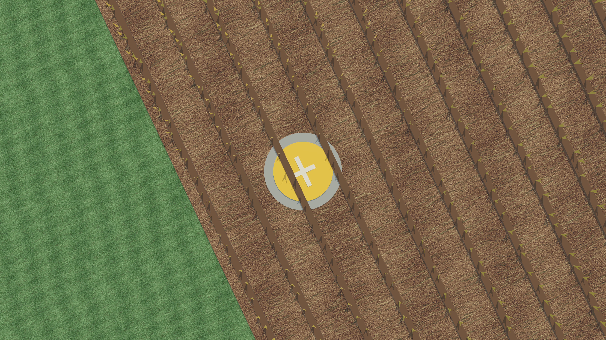
survey_camera | XYZ -39.041, -36.088, 13.0 m
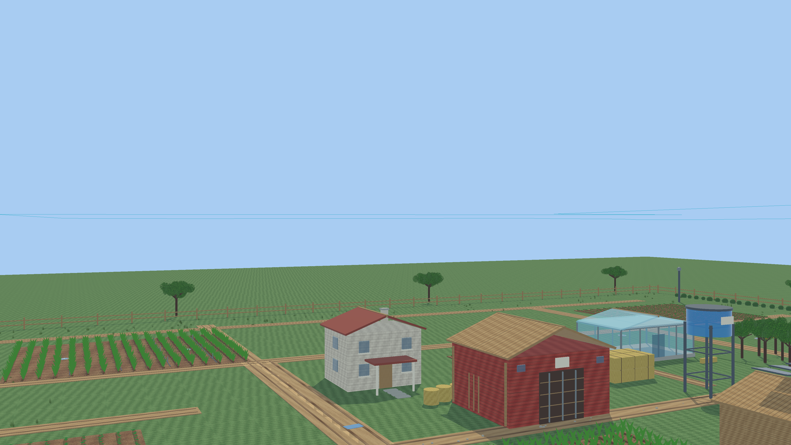
camera | XYZ -39.041, -36.088, 13.0 m
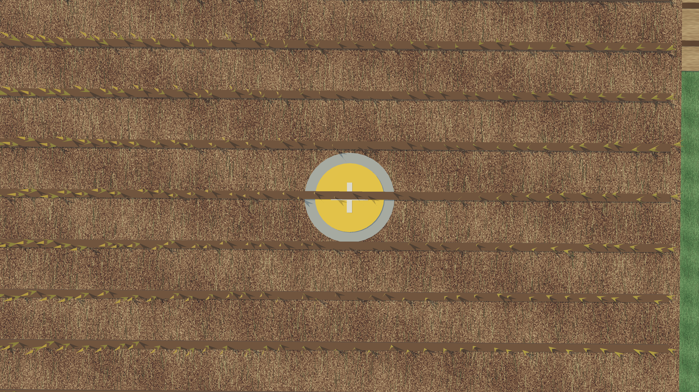
survey_camera | XYZ -28.098, -36.001, 13.0 m
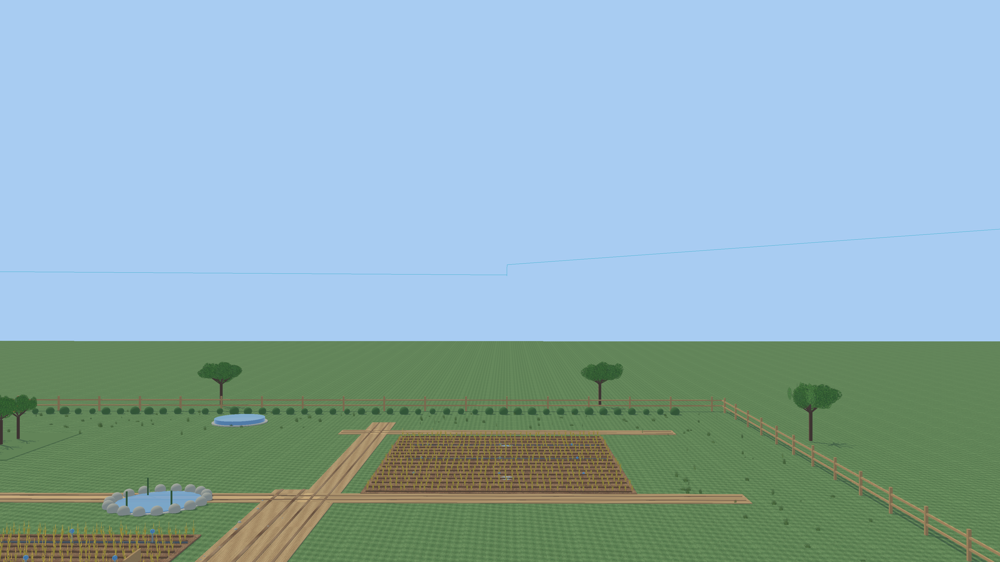
camera | XYZ -28.098, -36.001, 13.0 m
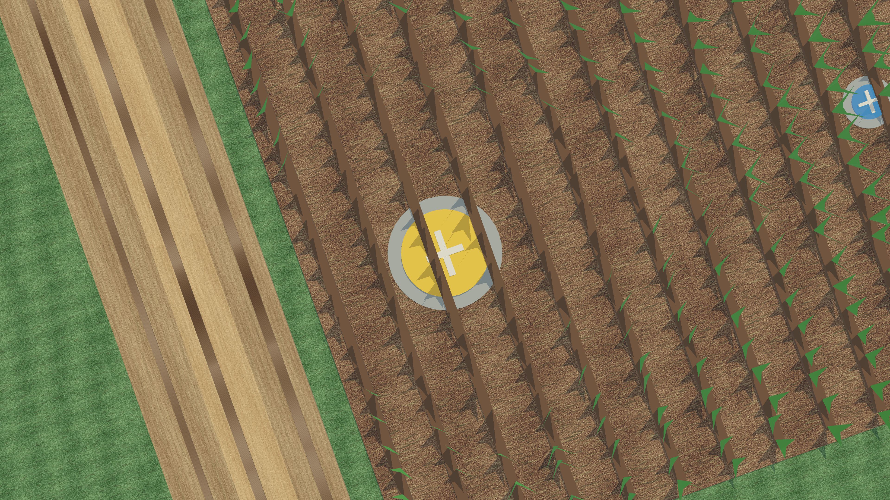
survey_camera | XYZ -19.027, -10.575, 13.0 m
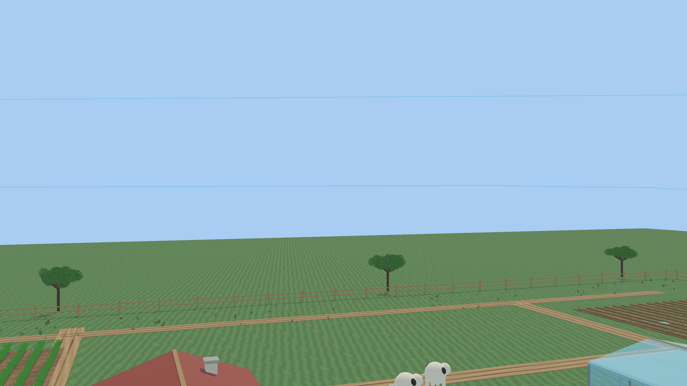
camera | XYZ -19.027, -10.575, 13.0 m
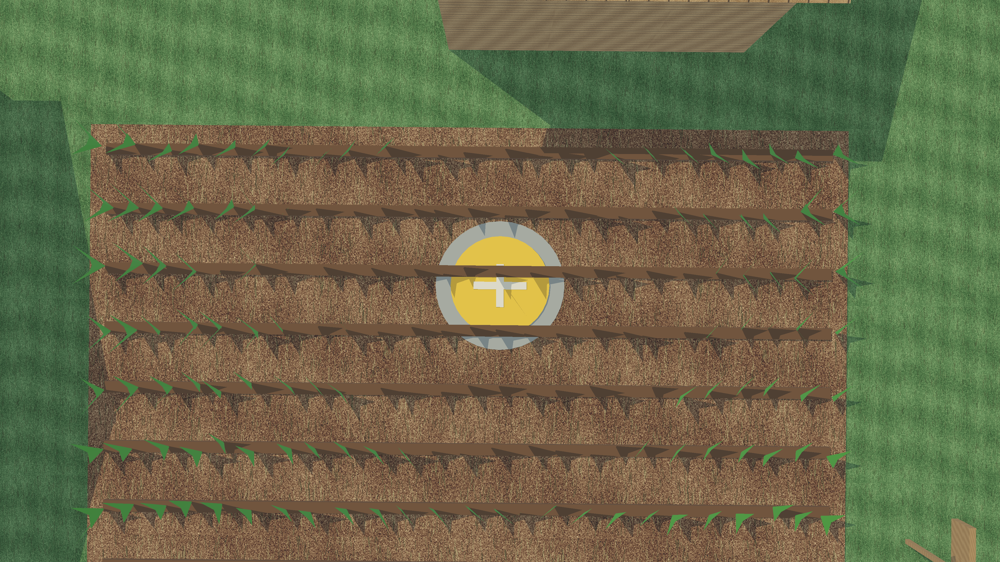
survey_camera | XYZ -11.062, -10.501, 13.0 m
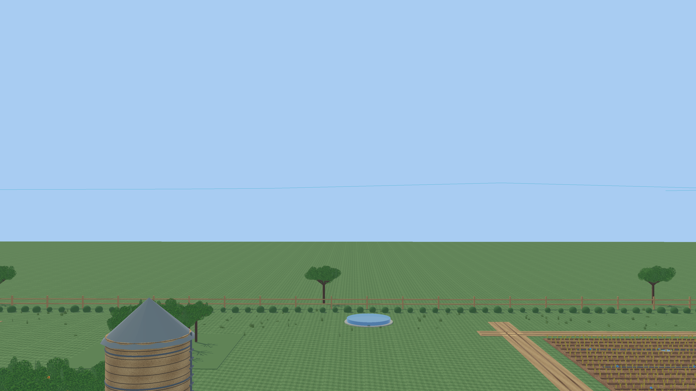
camera | XYZ -11.062, -10.501, 13.0 m
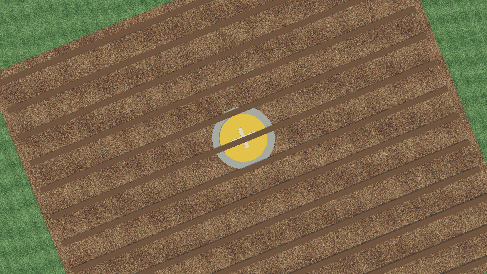
survey_camera | XYZ -41.898, 1.959, 13.0 m
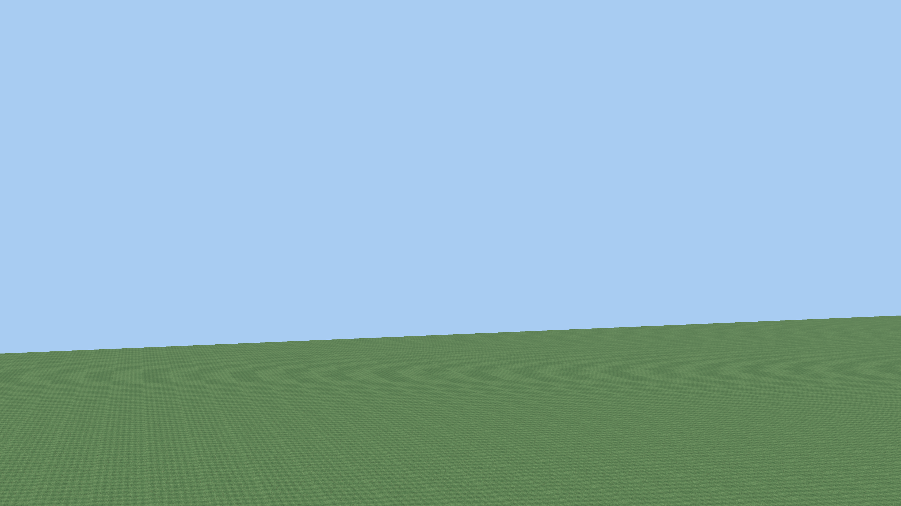
camera | XYZ -41.898, 1.959, 13.0 m
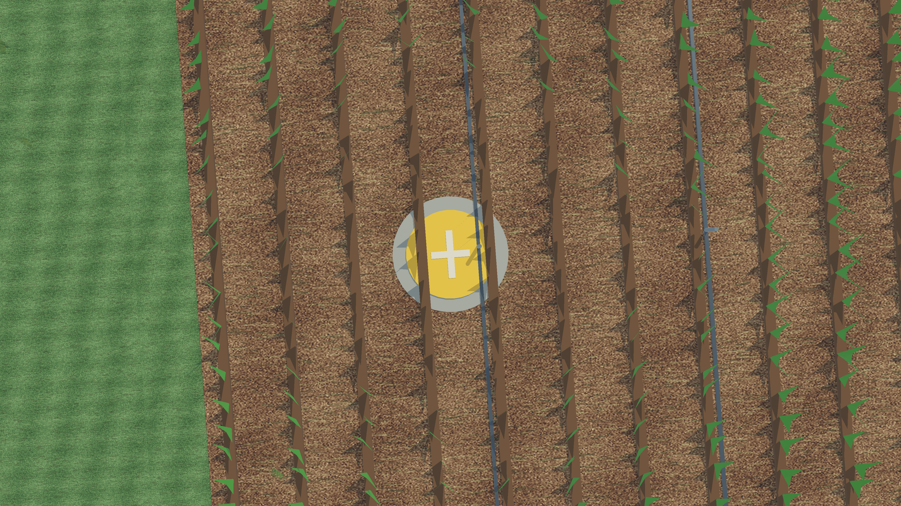
survey_camera | XYZ -39.508, 34.887, 13.0 m
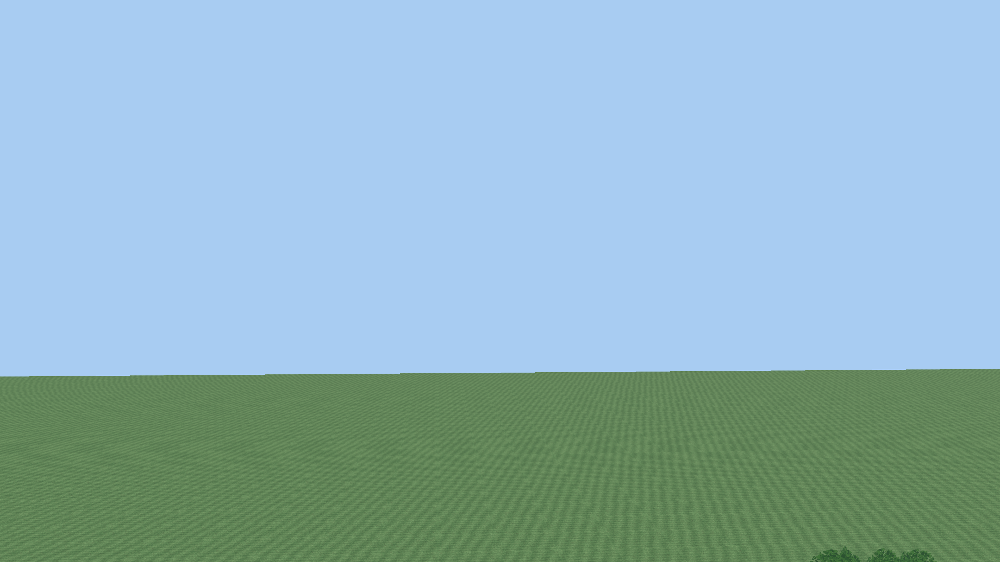
camera | XYZ -39.508, 34.887, 13.0 m
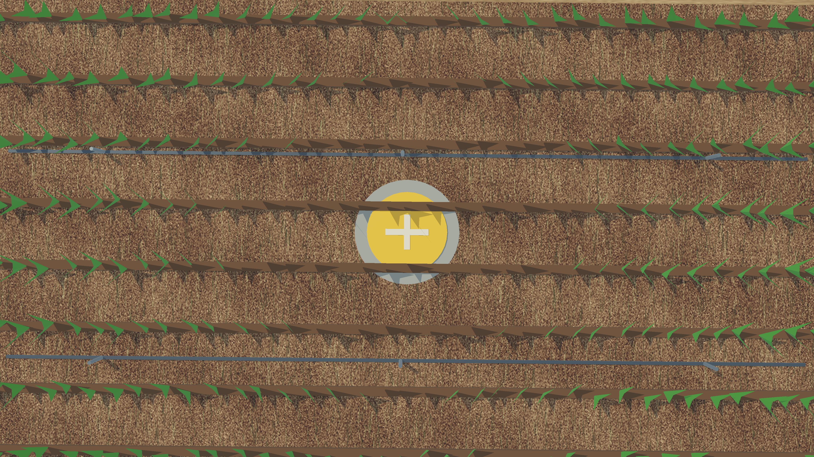
survey_camera | XYZ -28.565, 34.999, 13.0 m
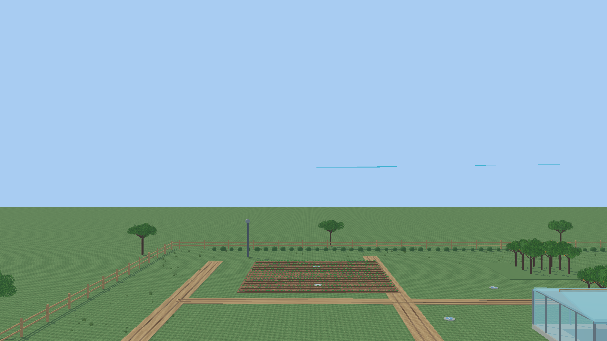
camera | XYZ -28.565, 34.999, 13.0 m
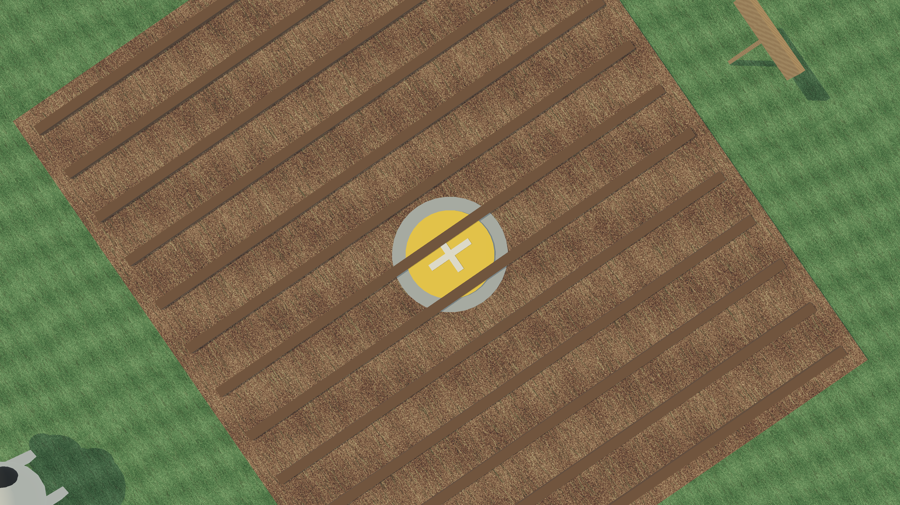
survey_camera | XYZ -1.082, 16.056, 13.0 m
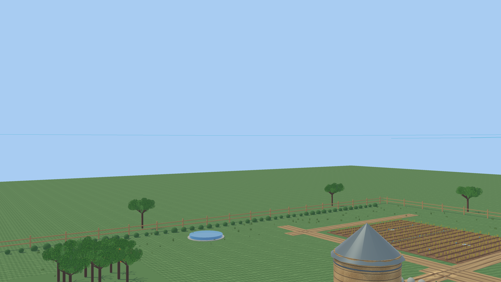
camera | XYZ -1.082, 16.056, 13.0 m
survey_camera | XYZ 16.927, 22.977, 13.0 m
camera | XYZ 16.927, 22.977, 13.0 m